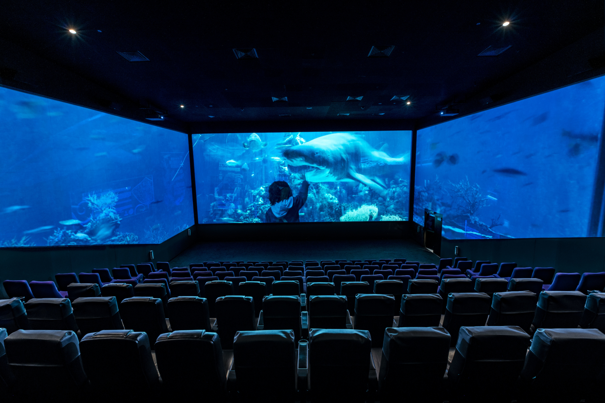

<
In conclusion

Cinemas have done the follwing to adapt to this new Covid-19 era:
- Cinemas have suffered a great loss over the course of the pandemic.
- This has been due to the impact of streaming which has left a lastingimpression
on the public.
- Most people now believe that cinemas are out-dated and with the inconsistences
in the operation of cinemas, cinemas have now lost their standing in the movie
distribution chain.
- Although cinemas have found new ways to keep the public safe, this has yet to
help them fully recover all the revenue that was lost over the course of the
last year.
- Aside from complications in revenue and customer cinemas have found a way to
operate within the pandemic even if it leads to no profit.